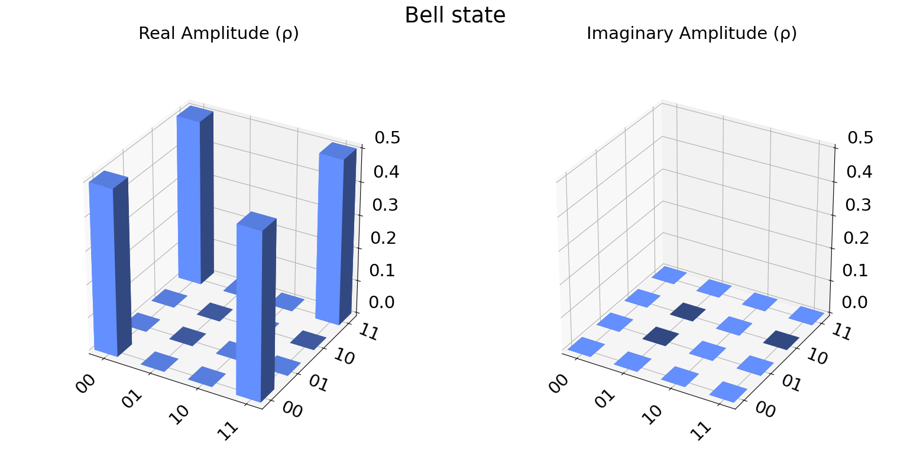

Qiskit Aer#
Updated on 11/15/2023
Simulating your first quantum program with Qiskit Aer#
https://qiskit.org/ecosystem/aer/getting_started.html
import numpy as np
import qiskit
from qiskit_aer import AerSimulator
from qiskit import QuantumCircuit
from qiskit import Aer, transpile
from qiskit.tools.visualization import plot_histogram, plot_state_city
import qiskit.quantum_info as qi
---------------------------------------------------------------------------
ModuleNotFoundError Traceback (most recent call last)
Cell In[1], line 1
----> 1 import numpy as np
2 import qiskit
3 from qiskit_aer import AerSimulator
ModuleNotFoundError: No module named 'numpy'
# import qiskit
# from qiskit_aer import AerSimulator
# Generate 3-qubit GHZ state
circ = qiskit.QuantumCircuit(3)
circ.h(0)
circ.cx(0, 1)
circ.cx(1, 2)
circ.measure_all()
circ.draw()
┌───┐ ░ ┌─┐
q_0: ┤ H ├──■────────░─┤M├──────
└───┘┌─┴─┐ ░ └╥┘┌─┐
q_1: ─────┤ X ├──■───░──╫─┤M├───
└───┘┌─┴─┐ ░ ║ └╥┘┌─┐
q_2: ──────────┤ X ├─░──╫──╫─┤M├
└───┘ ░ ║ ║ └╥┘
meas: 3/═══════════════════╩══╩══╩═
0 1 2 # Construct an ideal simulator
aersim = AerSimulator()
# Perform an ideal simulation
result_ideal = qiskit.execute(circ, aersim).result()
counts_ideal = result_ideal.get_counts(0)
print('Counts(ideal):', counts_ideal)
# Counts(ideal): {'000': 493, '111': 531}
Counts(ideal): {'111': 506, '000': 518}
Simulators#
Aer.backends()
[AerSimulator('aer_simulator'),
AerSimulator('aer_simulator'),
AerSimulator('aer_simulator'),
AerSimulator('aer_simulator'),
AerSimulator('aer_simulator'),
AerSimulator('aer_simulator'),
AerSimulator('aer_simulator'),
AerSimulator('aer_simulator'),
QasmSimulator('qasm_simulator'),
StatevectorSimulator('statevector_simulator'),
UnitarySimulator('unitary_simulator')]
# Create circuit
circ = QuantumCircuit(2)
circ.h(0)
circ.cx(0, 1)
circ.measure_all()
# Transpile for simulator
simulator = Aer.get_backend('aer_simulator')
# circ = transpile(circ, simulator)
# Run and get counts
result = simulator.run(circ).result()
counts = result.get_counts(circ)
plot_histogram(counts, title='Bell-State counts')
# Run and get memory
result = simulator.run(circ, shots=20, memory=True).result()
memory = result.get_memory(circ)
print(memory)
['00', '11', '11', '00', '11', '11', '00', '11', '11', '11', '11', '00', '00', '00', '11', '11', '00', '11', '11', '11']
# Increase shots to reduce sampling variance
shots = 10000
# Stabilizer simulation method
sim_stabilizer = Aer.get_backend('aer_simulator_stabilizer')
job_stabilizer = sim_stabilizer.run(circ, shots=shots)
counts_stabilizer = job_stabilizer.result().get_counts(0)
# Statevector simulation method
sim_statevector = Aer.get_backend('aer_simulator_statevector')
job_statevector = sim_statevector.run(circ, shots=shots)
counts_statevector = job_statevector.result().get_counts(0)
# Density Matrix simulation method
sim_density = Aer.get_backend('aer_simulator_density_matrix')
job_density = sim_density.run(circ, shots=shots)
counts_density = job_density.result().get_counts(0)
# Matrix Product State simulation method
sim_mps = Aer.get_backend('aer_simulator_matrix_product_state')
job_mps = sim_mps.run(circ, shots=shots)
counts_mps = job_mps.result().get_counts(0)
plot_histogram([counts_stabilizer, counts_statevector, counts_density, counts_mps],
title='Counts for different simulation methods',
legend=['stabilizer', 'statevector',
'density_matrix', 'matrix_product_state'])
# Construct quantum circuit without measure
circ = QuantumCircuit(2)
circ.h(0)
circ.cx(0, 1)
circ.save_statevector()
# Transpile for simulator
simulator = Aer.get_backend('aer_simulator')
circ = transpile(circ, simulator)
# Run and get statevector
result = simulator.run(circ).result()
statevector = result.get_statevector(circ)
plot_state_city(statevector, title='Bell state')

# Construct quantum circuit without measure
circ = QuantumCircuit(2)
circ.h(0)
circ.cx(0, 1)
circ.save_unitary()
# Transpile for simulator
simulator = Aer.get_backend('aer_simulator')
circ = transpile(circ, simulator)
# Run and get unitary
result = simulator.run(circ).result()
unitary = result.get_unitary(circ)
print("Circuit unitary:\n", np.asarray(unitary).round(5))
Circuit unitary:
[[ 0.70711+0.j 0.70711+0.j 0. +0.j 0. +0.j]
[ 0. +0.j 0. +0.j 0.70711+0.j -0.70711-0.j]
[ 0. +0.j 0. +0.j 0.70711+0.j 0.70711+0.j]
[ 0.70711+0.j -0.70711-0.j 0. +0.j 0. +0.j]]
Device backend noise model simulations#
Single-qubit gate errors consisting of a single qubit depolarizing error followed by a single qubit thermal relaxation error.
Two-qubit gate errors consisting of a two-qubit depolarizing error followed by single-qubit thermal relaxation errors on both qubits in the gate.
Single-qubit readout errors on the classical bit value obtained from measurements on individual qubits.
# import qiskit
# from qiskit_aer import AerSimulator
# import numpy as np
# from qiskit import QuantumCircuit
# from qiskit import Aer, transpile
# from qiskit.tools.visualization import plot_histogram, plot_state_city
# import qiskit.quantum_info as qi
# Construct quantum circuit
circ = QuantumCircuit(3, 3)
circ.h(0)
circ.cx(0, 1)
circ.cx(1, 2)
circ.measure([0, 1, 2], [0, 1, 2])
circ.draw()
┌───┐ ┌─┐
q_0: ┤ H ├──■───────┤M├──────
└───┘┌─┴─┐ └╥┘┌─┐
q_1: ─────┤ X ├──■───╫─┤M├───
└───┘┌─┴─┐ ║ └╥┘┌─┐
q_2: ──────────┤ X ├─╫──╫─┤M├
└───┘ ║ ║ └╥┘
c: 3/════════════════╩══╩══╩═
0 1 2 sim_ideal = AerSimulator()
# Execute and get counts
result = sim_ideal.run(transpile(circ, sim_ideal)).result()
counts = result.get_counts(0)
plot_histogram(counts, title='Ideal counts for 3-qubit GHZ state')
from qiskit.providers.fake_provider import FakeVigo
device_backend = FakeVigo()
sim_vigo = AerSimulator.from_backend(device_backend)
# Transpile the circuit for the noisy basis gates
tcirc = transpile(circ, sim_vigo)
tcirc.draw()
global phase: π/4
┌─────────┐┌────┐┌─────────┐ ┌─┐
q_0 -> 0 ┤ Rz(π/2) ├┤ √X ├┤ Rz(π/2) ├──■───────┤M├──────
└─────────┘└────┘└─────────┘┌─┴─┐ └╥┘┌─┐
q_1 -> 1 ────────────────────────────┤ X ├──■───╫─┤M├───
└───┘┌─┴─┐ ║ └╥┘┌─┐
q_2 -> 2 ─────────────────────────────────┤ X ├─╫──╫─┤M├
└───┘ ║ ║ └╥┘
ancilla_0 -> 3 ───────────────────────────────────────╫──╫──╫─
║ ║ ║
ancilla_1 -> 4 ───────────────────────────────────────╫──╫──╫─
║ ║ ║
c: 3/═══════════════════════════════════════╩══╩══╩═
0 1 2 # Execute noisy simulation and get counts
result_noise = sim_vigo.run(tcirc).result()
counts_noise = result_noise.get_counts(0)
plot_histogram(counts_noise,
title="Counts for 3-qubit GHZ state with device noise model")
# Construct quantum circuit
circ = QuantumCircuit(3, 3)
circ.h(0)
# circ.barrier([0,1,2])
circ.cx(0, 1)
circ.cx(1, 2)
circ.barrier([0,1,2])
circ.delay(1e-4, unit='s')
circ.barrier([0,1,2])
circ.measure([0, 1, 2], [0, 1, 2])
circ.draw()
┌───┐ ░ ┌──────────────────┐ ░ ┌─┐
q_0: ┤ H ├──■────────░─┤ Delay(0.0001[s]) ├─░─┤M├──────
└───┘┌─┴─┐ ░ ├──────────────────┤ ░ └╥┘┌─┐
q_1: ─────┤ X ├──■───░─┤ Delay(0.0001[s]) ├─░──╫─┤M├───
└───┘┌─┴─┐ ░ ├──────────────────┤ ░ ║ └╥┘┌─┐
q_2: ──────────┤ X ├─░─┤ Delay(0.0001[s]) ├─░──╫──╫─┤M├
└───┘ ░ └──────────────────┘ ░ ║ ║ └╥┘
c: 3/══════════════════════════════════════════╩══╩══╩═
0 1 2 from qiskit.providers.fake_provider import FakePerth
from qiskit_aer.noise import NoiseModel
noise_model = NoiseModel.from_backend(
FakePerth(), thermal_relaxation=True, gate_error=False, readout_error=False
)
sim_noise = AerSimulator.from_backend(FakePerth(), noise_model=noise_model)
# Transpile the circuit for the noisy basis gates
tcirc = transpile(circ, sim_noise)
tcirc.draw()
global phase: π/4
┌─────────┐┌────┐┌─────────┐ ░ ┌──────────────────┐ ░ »
q_0 -> 0 ┤ Rz(π/2) ├┤ √X ├┤ Rz(π/2) ├──■────────░─┤ Delay(0.0001[s]) ├─░─»
└─────────┘└────┘└─────────┘┌─┴─┐ ░ ├──────────────────┤ ░ »
q_1 -> 1 ────────────────────────────┤ X ├──■───░─┤ Delay(0.0001[s]) ├─░─»
└───┘┌─┴─┐ ░ ├──────────────────┤ ░ »
q_2 -> 2 ─────────────────────────────────┤ X ├─░─┤ Delay(0.0001[s]) ├─░─»
└───┘ ░ └──────────────────┘ ░ »
ancilla_0 -> 3 ────────────────────────────────────────────────────────────────»
»
ancilla_1 -> 4 ────────────────────────────────────────────────────────────────»
»
ancilla_2 -> 5 ────────────────────────────────────────────────────────────────»
»
ancilla_3 -> 6 ────────────────────────────────────────────────────────────────»
»
c: 3/════════════════════════════════════════════════════════════════»
»
« ┌─┐
« q_0 -> 0 ┤M├──────
« └╥┘┌─┐
« q_1 -> 1 ─╫─┤M├───
« ║ └╥┘┌─┐
« q_2 -> 2 ─╫──╫─┤M├
« ║ ║ └╥┘
«ancilla_0 -> 3 ─╫──╫──╫─
« ║ ║ ║
«ancilla_1 -> 4 ─╫──╫──╫─
« ║ ║ ║
«ancilla_2 -> 5 ─╫──╫──╫─
« ║ ║ ║
«ancilla_3 -> 6 ─╫──╫──╫─
« ║ ║ ║
« c: 3/═╩══╩══╩═
« 0 1 2 # Execute noisy simulation and get counts
result_noise = sim_noise.run(tcirc).result()
counts_noise = result_noise.get_counts(0)
plot_histogram(counts_noise,
title="Counts for 3-qubit GHZ state with device noise model")
# Execute noisy simulation and get counts
result_noise = sim_vigo.run(circ).result()
counts_noise = result_noise.get_counts(0)
plot_histogram(counts_noise,
title="Counts for 3-qubit GHZ state with device noise model")
T1#
circ = QuantumCircuit(1, 1)
circ.x(0)
circ.barrier(0)
circ.delay(1e-2, unit='s')
circ.barrier(0)
circ.measure(0, 0)
circ.draw()
┌───┐ ░ ┌────────────────┐ ░ ┌─┐
q: ┤ X ├─░─┤ Delay(0.01[s]) ├─░─┤M├
└───┘ ░ └────────────────┘ ░ └╥┘
c: 1/══════════════════════════════╩═
0 # Transpile for simulator
simulator = Aer.get_backend('aer_simulator')
circ = transpile(circ, simulator)
circ.draw()
global phase: π
┌────────────┐ ░ ┌────────────────┐ ░ ┌─┐
q: ┤ U3(π,-π,0) ├─░─┤ Delay(0.01[s]) ├─░─┤M├
└────────────┘ ░ └────────────────┘ ░ └╥┘
c: 1/═══════════════════════════════════════╩═
0 # Run and get counts
result = simulator.run(circ).result()
counts = result.get_counts(circ)
plot_histogram(counts, title='Bell-State counts')
from qiskit.providers.fake_provider import FakePerth
noise_model = NoiseModel.from_backend(
FakePerth(), thermal_relaxation=True, gate_error=False, readout_error=False
)
sim_noise = AerSimulator.from_backend(FakePerth(), noise_model=noise_model)
# print(FakePerth().qubit_properties(0).t1)
circ = QuantumCircuit(1, 1)
circ.x(0)
circ.barrier(0)
circ.delay(1e-2, unit='s')
circ.barrier(0)
circ.measure(0, 0)
circ.draw()
┌───┐ ░ ┌────────────────┐ ░ ┌─┐
q: ┤ X ├─░─┤ Delay(0.01[s]) ├─░─┤M├
└───┘ ░ └────────────────┘ ░ └╥┘
c: 1/══════════════════════════════╩═
0 # Transpile the circuit for the noisy basis gates
tcirc = transpile(circ, sim_noise)
tcirc.draw()
┌───┐ ░ ┌────────────────┐ ░ ┌─┐
q_0 -> 0 ┤ X ├─░─┤ Delay(0.01[s]) ├─░─┤M├
└───┘ ░ └────────────────┘ ░ └╥┘
ancilla_0 -> 1 ──────────────────────────────╫─
║
ancilla_1 -> 2 ──────────────────────────────╫─
║
ancilla_2 -> 3 ──────────────────────────────╫─
║
ancilla_3 -> 4 ──────────────────────────────╫─
║
ancilla_4 -> 5 ──────────────────────────────╫─
║
ancilla_5 -> 6 ──────────────────────────────╫─
║
c: 1/══════════════════════════════╩═
0 # Run and get counts
result = sim_noise.run(circ).result()
counts = result.get_counts(circ)
plot_histogram(counts, title='')
# Run and get counts
result = sim_noise.run(tcirc).result()
counts = result.get_counts(tcirc)
plot_histogram(counts, title='')